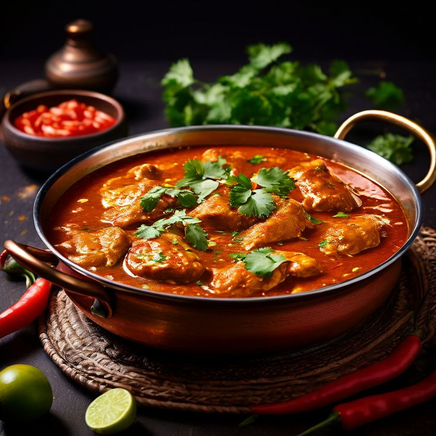

Chicken Karahi
History
A beloved dish in Pakistan, Chicken Karahi originates from the Khyber Pakhtunkhwa region. Traditionally cooked in a wok-like pan called a "karahi," it is known for its rich, spicy tomato-based gravy

Recipe
- Heat ghee and oil in a pan, sauté onions until golden.
- Add garlic, ginger, and green chili, followed by chicken and salt. Cook until the chicken changes color.
- Stir in tomatoes, coriander, cumin, and red chili powder.
- Cover and cook for 20 minutes, then uncover and sauté for 10 minutes.
- Add whisked yogurt, black pepper, and garam masala.
- Garnish with green chilies, ginger, and cilantro. Serve hot with naan or rice.